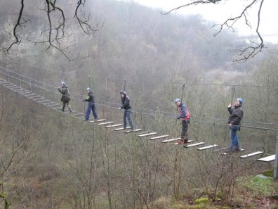

La journée de l'aventure

L'idée est de rassembler les 14 - 21 ans autour d'une activité sportive. La date de l'activité n'est pas encore arrêtée mais elle devrait se dérouler
en juillet ou en août. Nous prendrons contact avec ceux concernés par cette tranche d'âge ainsi que leurs parents s'ils ne sont pas majeurs.
Les parents seront les bienvenus.
Les frais de participations seront d'autant plus faibles que nous serons nombreux. Nous pourrons aussi faire appel à un sponsoring pour que l'activité soit
accessible au plus grand nombre.
N'hésitez pas à nous faire une proposition par le biais du courriel du Comité des fêtes. A bientôt.